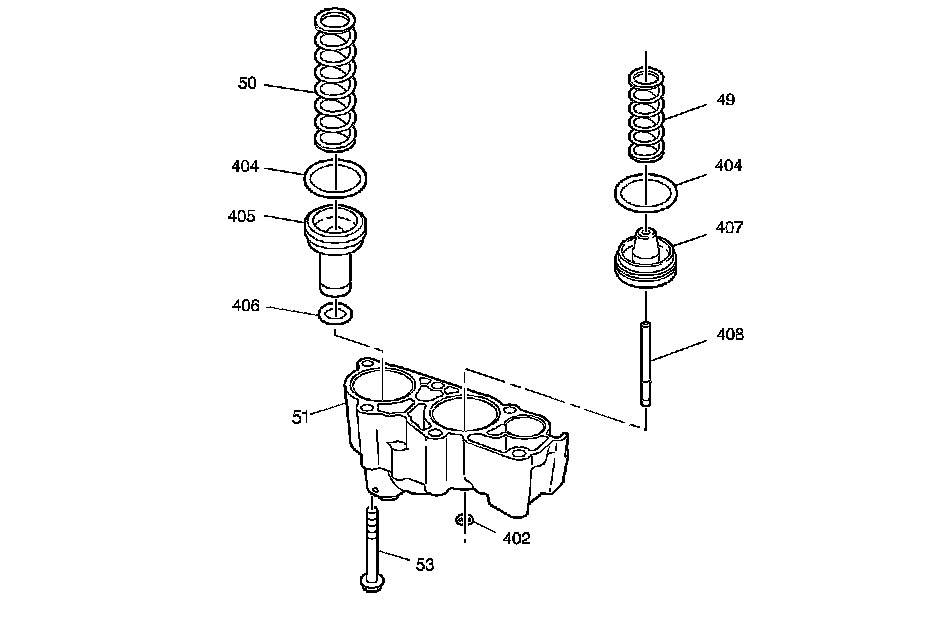

Accumulator Assembly
Disassembled Views
Accumulator Assembly:

49 - 4th Clutch Accumulator Piston Spring
50 - 3rd Clutch Accumulator Piston Spring
51 - 3rd and 4th Clutch Accumulator Housing
53 - 3rd and 4th Clutch Accumulator Housing Bolt
402 - 4th Clutch Accumulator Piston Pin Ring
404 - 3rd and 4th Clutch Accumulator Piston Seal
404 - 3rd and 4th Clutch Accumulator Piston Seal
405 - 3rd Clutch Accumulator Piston
406 - 3rd Clutch Accumulator Piston Inner Seal
407 - 4th Clutch Accumulator Piston
408 - 4th Clutch Accumulator Piston Pin